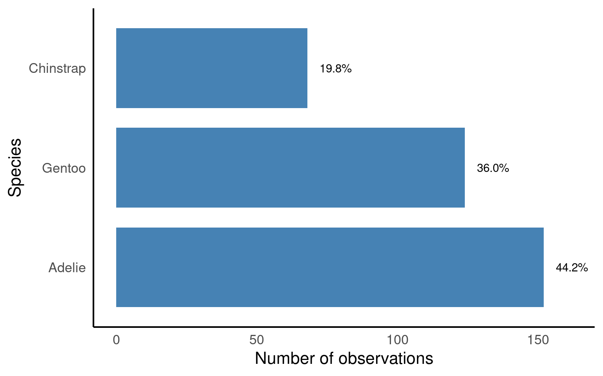
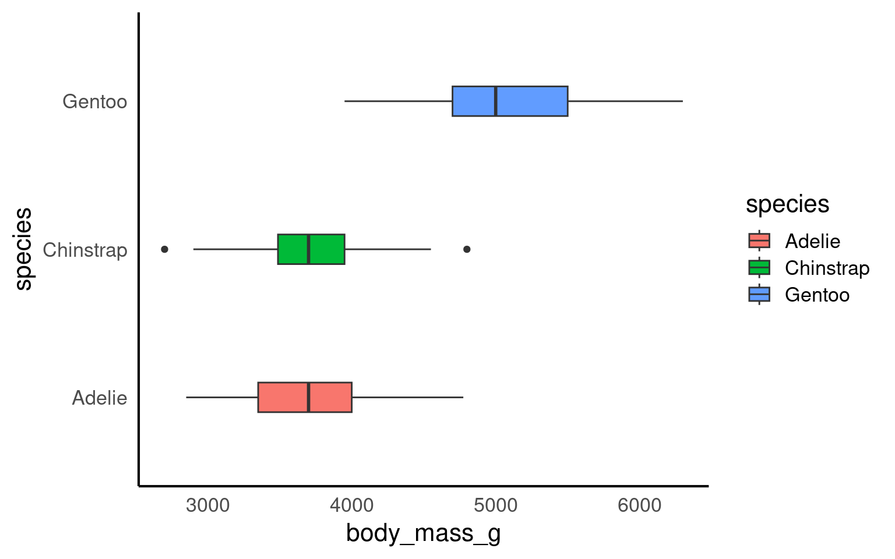
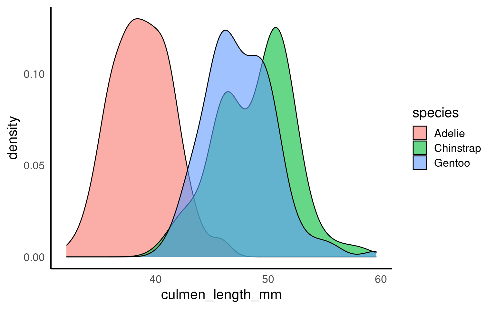
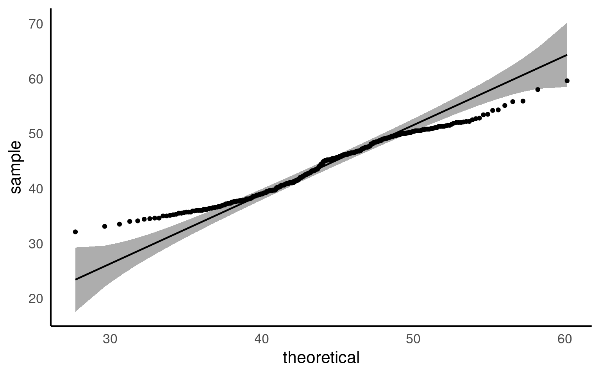
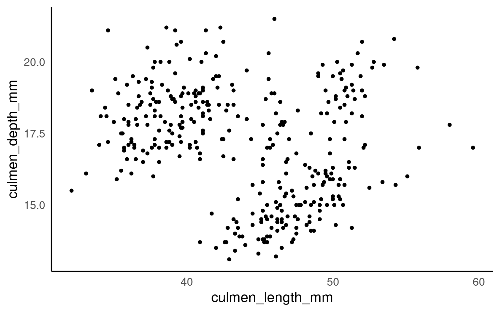
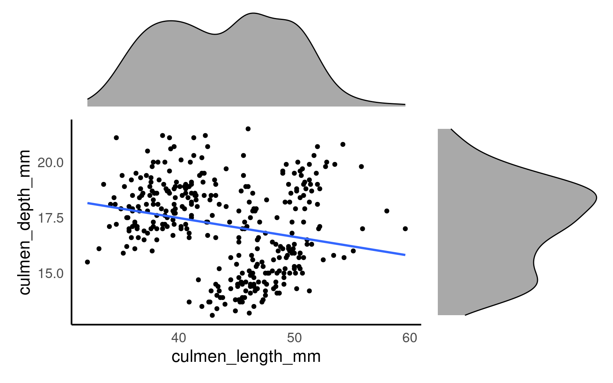

penguins |>
# calculations applied per species
group_by(species) |>
# summarise the number of observations in each group
summarise(n = n())| species | n |
|---|---|
| Adelie | 152 |
| Chinstrap | 68 |
| Gentoo | 124 |
For this exercise we will propose that our task is to generate insights into the relationship between bill (culmen) length and bill (culmen) depth of our penguins, in order to answer the question
In order to answer this question properly we should first understand our different variables and how they might relate to each other.
Distribution of data types
Central tendency
Relationship between variables
Confounding variables
This inevitably leads to more and a variety of questions. Each new question that you ask will expose you to a new aspect of your data.
Importantly you should have already generated an understanding of the variables contained within your dataset during the data wrangling steps. Including:
The number of variables
The data format of each variable
Checked for missing data
Checked for typos, duplications or other data errors
Cleaned column or factor names
Understanding how your data is distributed across important grouping variables is essential for context. In this case, the Palmer Penguins dataset includes key groupings such as species, island, and year, which might have significant effects on the relationships we want to study (e.g., between bill length and bill depth). By summarizing and visualizing the distribution of these variables, we can ensure that our analyses account for group-level differences, leading to more robust insights.
By grouping the data according to the species variable, it calculates the total count (n) of penguins within each species. This summary helps us understand the distribution of penguin species in the dataset, giving insights into the sample size available for each group, which is important for any further analysis or comparison between species.
penguins |>
# calculations applied per species
group_by(species) |>
# summarise the number of observations in each group
summarise(n = n())| species | n |
|---|---|
| Adelie | 152 |
| Chinstrap | 68 |
| Gentoo | 124 |
Question Are there 152 different penguins in our dataset?
The functions above count the number of rows of data - we need to determine if these are repeated or independent measures. We should remember that there is a column called individual_id if we use the n_distinct() function we can count how many unique IDs we have
penguins |>
# calculations applied per species
group_by(species) |>
# summarise the number of observations in each group
summarise(n = n_distinct(individual_id))| species | n |
|---|---|
| Adelie | 132 |
| Chinstrap | 58 |
| Gentoo | 94 |
Now we can see that there are only 132 different Adelie penguins in our data
It might be useful for us to make some quick data summaries here, like relative frequency
prob_obs_species <- penguins |>
group_by(species) |>
summarise(n = n()) |>
# use mutate to make a new column relative frequency
mutate(prob_obs = n/sum(n))
prob_obs_species| species | n | prob_obs |
|---|---|---|
| Adelie | 152 | 0.4418605 |
| Chinstrap | 68 | 0.1976744 |
| Gentoo | 124 | 0.3604651 |
So about 44% of our sample is made up of observations from Adelie penguins. When it comes to making summaries about categorical data, that’s about the best we can do, we can make observations about the most common categorical observations, and the relative proportions.
penguins |>
mutate(species=fct_relevel(species,
"Adelie",
"Gentoo",
"Chinstrap")) |>
# set as factor and provide levels
ggplot()+
geom_bar(aes(x=species),
fill="steelblue",
width=0.8)+
labs(x="Species",
y = "Number of observations")+
geom_text(data=prob_obs_species,
aes(y=(n+10),
x=species,
label=scales::percent(prob_obs)))+
coord_flip()
This is an example of a figure we might use in a report or paper. Having cleaned up the theme, added some simple colour, made sure our labels are clear and descriptive, ordered our categories in ascending frequency order, and included some simple text of percentages to aid readability.
Think about what might be a suitable confounding variable to investigate and graph here?
Understanding how frequency is broken down by island, species year and sex might be useful.
| island | year | species | sex | n |
|---|---|---|---|---|
| Biscoe | 2007 | Adelie | Female | 5 |
| Biscoe | 2007 | Adelie | Male | 5 |
| Biscoe | 2007 | Gentoo | Female | 16 |
| Biscoe | 2007 | Gentoo | Male | 17 |
| Biscoe | 2007 | Gentoo | NA | 1 |
| Biscoe | 2008 | Adelie | Female | 9 |
| Biscoe | 2008 | Adelie | Male | 9 |
| Biscoe | 2008 | Gentoo | Female | 22 |
| Biscoe | 2008 | Gentoo | Male | 23 |
| Biscoe | 2008 | Gentoo | NA | 1 |
| Biscoe | 2009 | Adelie | Female | 8 |
| Biscoe | 2009 | Adelie | Male | 8 |
| Biscoe | 2009 | Gentoo | Female | 20 |
| Biscoe | 2009 | Gentoo | Male | 21 |
| Biscoe | 2009 | Gentoo | NA | 3 |
| Dream | 2007 | Adelie | Female | 9 |
| Dream | 2007 | Adelie | Male | 10 |
| Dream | 2007 | Adelie | NA | 1 |
| Dream | 2007 | Chinstrap | Female | 13 |
| Dream | 2007 | Chinstrap | Male | 13 |
| Dream | 2008 | Adelie | Female | 8 |
| Dream | 2008 | Adelie | Male | 8 |
| Dream | 2008 | Chinstrap | Female | 9 |
| Dream | 2008 | Chinstrap | Male | 9 |
| Dream | 2009 | Adelie | Female | 10 |
| Dream | 2009 | Adelie | Male | 10 |
| Dream | 2009 | Chinstrap | Female | 12 |
| Dream | 2009 | Chinstrap | Male | 12 |
| Torgersen | 2007 | Adelie | Female | 8 |
| Torgersen | 2007 | Adelie | Male | 7 |
| Torgersen | 2007 | Adelie | NA | 5 |
| Torgersen | 2008 | Adelie | Female | 8 |
| Torgersen | 2008 | Adelie | Male | 8 |
| Torgersen | 2009 | Adelie | Female | 8 |
| Torgersen | 2009 | Adelie | Male | 8 |
By thinking about the way in which categories might interact we can consider interesting patterns or potential issues in data collection.
Looking at these patterns I am reassured that the number of males and females spotted is roughly equal across species and locations.
There are different numbers of species on different islands, but this is consistent across years so hopefully represents true species distributions.
The number of penguins is consistent across years
There are some missing values for sex, but they are small and don’t fit a strong pattern.
In the previous section above we were able to characterise some missing data, but only a little and it appears to be fairly random. This means we can probably safely remove it from calculations or statistics without issue.
But what about our variables of interest? Culmen length and depth? We previously used skimr::skim and summary to identify there were two missing values each for culmen length and depth. Although this is unlikely to cause any issues of bias in our data it might be nice to know where these missing values are located in our data?
penguins |>
# Filter rows where culmen length is NA
filter(is.na(culmen_length_mm)) |>
# Group by species, sex and island
group_by(species, sex, year, island) |>
summarise(n_missing = n())
penguins |>
filter(is.na(culmen_depth_mm)) |>
group_by(species, sex, year, island) |>
summarise(n_missing = n()) | species | sex | year | island | n_missing |
|---|---|---|---|---|
| Adelie | NA | 2007 | Torgersen | 1 |
| Gentoo | NA | 2009 | Biscoe | 1 |
| species | sex | year | island | n_missing |
|---|---|---|---|---|
| Adelie | NA | 2007 | Torgersen | 1 |
| Gentoo | NA | 2009 | Biscoe | 1 |
There is data missing from one Adelie penguin in 2007 on Torgersen, and one value missing from a Gentoo penguin in 2009 on Biscoe. This is true for both culmen length and depth, it is probably the same penguin in both cases, but how could we change our code to be sure?
penguins |>
filter(is.na(culmen_length_mm)) |>
# ADD individual id into group_by arguments
group_by(species, sex, year, island, individual_id) |>
summarise(n_missing = n())
penguins |>
filter(is.na(culmen_depth_mm)) |>
group_by(species, sex, year, island, individual_id) |>
summarise(n_missing = n()) | species | sex | year | island | individual_id | n_missing |
|---|---|---|---|---|---|
| Adelie | NA | 2007 | Torgersen | N2A2 | 1 |
| Gentoo | NA | 2009 | Biscoe | N38A2 | 1 |
| species | sex | year | island | individual_id | n_missing |
|---|---|---|---|---|---|
| Adelie | NA | 2007 | Torgersen | N2A2 | 1 |
| Gentoo | NA | 2009 | Biscoe | N38A2 | 1 |
Again here we could safely drop these from our data and regard these as missing at random.
There are a few different ways we can deal with missing data:
drop_na() on everything before we start.This runs the risk that we lose a lot of data as every row, with an NA in any column will be removed
drop_na() on a particular variable.This is fine, but we should approach this cautiously - if we do this in a way where we write this data into a new object e.g. penguins <- penguins |> drop_na(body_mass_g) then we have removed this data forever - perhaps we only want to drop those rows for a specific calculation - again they might contain useful information in other variables.
mean(x, na.rm = T) Many summary functions have the argument to include or exclude missingness, by default mean() is set to na.rm = F and will produce an NA value if there is any missingness, once we have investigated this we could simply set na.rm = T and remove NA from the calculations
Variation is the tendency of the values of a variable to change from measurement to measurement. You can see variation easily in real life; if you measure any continuous variable twice, you will get two different results. This is true even if you measure quantities that are constant, like the speed of light. Each of your measurements will include a small amount of error that varies from measurement to measurement. Every variable has its own pattern of variation, which can reveal interesting information. The best way to understand that pattern is to visualise the distribution of the variable’s values.
In the examples below I will look at the distributions of culmen length, you should modify and duplicate the code so that you check both culmen length and culmen depth.
This is the script to plot a frequency distribution, we only specify an x variable, because we intend to plot a histogram, and the y variable is always the count of observations. Here we ask the data to be presented in 10 equally sized bins of data. In this case chopping the x axis range into 10 equal parts and counting the number of observations that fall within each one.
Histograms are helpful because they show the distribution of a single numerical variable. They divide the data into “bins” (ranges of values) and count how many data points fall into each bin. This helps you:
See the shape of the data: You can easily spot if the data is normally distributed, skewed, or has multiple peaks (modes). Identify data spread: Histograms help you understand the spread or range of your data values. Detect outliers: Unusually high or low values become more noticeable in a histogram.
Change the value specified to the bins argument and observe how the figure changes. It is usually a very good idea to try more than one set of bins in order to have better insights into the data
Boxplots are useful because they provide a summary of the distribution of a numerical variable in a compact visual form. They help you see:
Central tendency: The middle line in the box shows the median (middle value) of the data.
Spread and variability: The length of the box (interquartile range) shows how spread out the data is.
Outliers: Boxplots clearly show outliers as points outside the “whiskers,” making them great for detecting extreme values.
Comparison between groups: You can easily compare the distribution of a variable across different groups (e.g., species) by using multiple boxplots side by side.
It’s common to want to explore the distribution of a continuous variable broken down by a categorical variable.
The best and simplest place to start exploring these possible relationships is by producing simple figures.
Let’s start by looking at the distribution of culmen length by species
penguins %>%
ggplot(aes(x = species,
y = body_mass_g,
fill = species))+
geom_boxplot(width = 0.2)+
coord_flip()
penguins %>%
ggplot(aes(fill = species))+
geom_density(aes(x = culmen_length_mm),
position = "identity",
alpha = 0.6)
The package ggridges (Wilke (2021)) provides some excellent extra geoms to supplement ggplot. One if its most useful features is to to allow different groups to be mapped to the y axis, so that histograms are more easily viewed.
If our data follows a normal distribution, then we can predict the spread of our data, and the likelihood of observing a datapoint of any given value with only the mean and standard deviation.
A QQ plot is a classic way of checking whether a sample distribution is the same as another (or theoretical distribution). They look a bit odd at first, but they are actually fairly easy to understand, and very useful! The qqplot distributes your data on the y-axis, and a theoretical normal distribution on the x-axis. If the residuals follow a normal distribution, they should meet to produce a perfect diagonal line across the plot.
Watch this video to see QQ plots explained
library(qqplotr)
ggplot(penguins, aes(sample = culmen_length_mm))+
stat_qq_band() +
stat_qq_line() +
stat_qq_point() 
| variable | statistic | p |
|---|---|---|
| culmen_length_mm | 0.9748548 | 1.12e-05 |
standard deviation (or s) is a measure of how dispersed the data is in relation to the mean. Low standard deviation means data are clustered around the mean, and high standard deviation indicates data are more spread out. As such it makes sense only to use this when the mean is a good measure of our central tendency.
When dealing with data that does not fit a normal distribution, using summary statistics like max, min, median, and interquartile range (IQR) provides a robust way to describe the data’s spread and central tendency. Unlike the mean and standard deviation, which are sensitive to outliers and skewed data, the median and IQR give a more accurate representation of the distribution’s center and spread in non-normal data.
Median: This is the middle value and provides a better measure of central tendency than the mean when data is skewed. IQR (Interquartile Range): This measures the spread of the middle 50% of the data (between the 25th and 75th percentiles) and is less affected by extreme values.
Min and Max: These values show the range of the data, highlighting any extreme values or outliers.
These summary statistics directly correspond to the boxplot: the median is the line inside the box, the IQR defines the box’s edges, and the min/max (after removing outliers) are represented by the ends of the whiskers.
penguins |>
group_by(species) |>
summarise(median = median(culmen_length_mm, na.rm = T),
quantile = quantile(culmen_length_mm, c(0.25, 0.5, 0.75), na.rm=TRUE),
max = max(culmen_length_mm, na.rm = T),
min = min(culmen_length_mm), na.rm = T)| species | median | quantile | max | min | na.rm |
|---|---|---|---|---|---|
| Adelie | 38.80 | 36.750 | 46.0 | NA | TRUE |
| Adelie | 38.80 | 38.800 | 46.0 | NA | TRUE |
| Adelie | 38.80 | 40.750 | 46.0 | NA | TRUE |
| Chinstrap | 49.55 | 46.350 | 58.0 | 40.9 | TRUE |
| Chinstrap | 49.55 | 49.550 | 58.0 | 40.9 | TRUE |
| Chinstrap | 49.55 | 51.075 | 58.0 | 40.9 | TRUE |
| Gentoo | 47.30 | 45.300 | 59.6 | NA | TRUE |
| Gentoo | 47.30 | 47.300 | 59.6 | NA | TRUE |
| Gentoo | 47.30 | 49.550 | 59.6 | NA | TRUE |
A common measure of association between two numerical variables is the correlation coefficient. The correlation metric is a numerical measure of the strength of an association
There are several measures of correlation including:
Pearson’s correlation coefficient : good for describing linear associations
Spearman’s rank correlation coefficient: a rank ordered correlation - good for when the assumptions for Pearson’s correlation is not met.
Pearson’s correlation coefficient r is designed to measure the strength of a linear (straight line) association. Pearson’s takes a value between -1 and 1.
A value of 0 means there is no linear association between the variables
A value of 1 means there is a perfect positive association between the variables
A value of -1 means there is a perfect negative association between the variables
A perfect association is one where we can predict the value of one variable with complete accuracy, just by knowing the value of the other variable.
We can use the cor function in R to calculate Pearson’s correlation coefficient.
| var1 | var2 | cor | statistic | p | conf.low | conf.high | method |
|---|---|---|---|---|---|---|---|
| culmen_length_mm | culmen_depth_mm | -0.24 | -4.459093 | 1.12e-05 | -0.3328072 | -0.1323004 | Pearson |
This tells us two features of the association. It’s sign and magnitude. The coefficient is negative, so as bill length increases, bill depth decreases. The value -0.22 indicates that only about 22% of the variation in bill length can be explained by changes in bill depth (and vice-versa), suggesting that the variables are not closely related.
Because Pearson’s coefficient is designed to summarise the strength of a linear relationship, this can be misleading if the relationship is not linear e.g. curved or humped. This is why it’s always a good idea to plot the relationship first (see above).
Even when the relationship is linear, it doesn’t tell us anything about the steepness of the association (see above). It only tells us how often a change in one variable can predict the change in the other not the value of that change.
This can be difficult to understand at first, so carefully consider the figure above.
The first row above shows differing levels of the strength of association. If we drew a perfect straight line between two variables, how closely do the data points fit around this line.
The second row shows a series of perfect linear relationships. We can accurately predict the value of one variable just by knowing the value of the other variable, but the steepness of the relationship in each example is very different. This is important because it means a perfect association can still have a small effect.
The third row shows a series of associations where there is clearly a relationship between the two variables, but it is also not linear so would be inappropriate for a Pearson’s correlation.
So what should we do if the relationship between our variables is non-linear or does not follow a normal distribution? Instead of using Pearson’s correlation coefficient we can calculate something called a rank correlation.
Instead of working with the raw values of our two variables we can use rank ordering instead. The idea is pretty simple if we start with the lowest vaule in a variable and order it as ‘1’, then assign labels ‘2’, ‘3’ etc. as we ascend in rank order. We can see a way that this could be applied manually with the function dense_rank from dplyr below:
| var1 | var2 | cor | statistic | p | method |
|---|---|---|---|---|---|
| culmen_length_mm | culmen_depth_mm | -0.22 | 8145268 | 3.51e-05 | Spearman |
Graphical summaries between numeric variables
Correlation coefficients are a quick and simple way to attach a metric to the level of association between two variables. They are limited however in that a single number can never capture the every aspect of their relationship. This is why we visualise our data.
scatterplot <- ggplot(penguins, aes(x= culmen_length_mm,
y= culmen_depth_mm)) +
geom_point()
scatterplot
library(patchwork) # package calls should be placed at the TOP of your script
bill_depth_marginal <- penguins %>%
ggplot()+
geom_density(aes(x=culmen_depth_mm), fill="darkgrey")+
theme_void()+
coord_flip() # this graph needs to be rotated
bill_length_marginal <- penguins %>%
ggplot()+
geom_density(aes(x=culmen_length_mm), fill="darkgrey")+
theme_void()
layout <- "
AA#
BBC
BBC"
# layout is easiest to organise using a text distribution, where ABC equal the three plots in order, and the grid is how much space they take up. We could easily make the main plot bigger and marginals smaller with
scatterplot <- scatterplot +
geom_smooth(method = "lm",
se = FALSE)
bill_length_marginal+scatterplot+bill_depth_marginal+ # order of plots is important
plot_layout(design=layout) # uses the layout argument defined above to arrange the size and position of plots
colours <- c("cyan",
"darkorange",
"purple")
scatterplot_2 <- ggplot(penguins, aes(x= culmen_length_mm,
y= culmen_depth_mm,
colour=species)) +
geom_point()+
geom_smooth(method="lm",
se=FALSE)+
scale_colour_manual(values=colours)+
theme_classic()+
theme(legend.position="none")+
labs(x="Bill length (mm)",
y="Bill depth (mm)")
bill_depth_marginal_2 <- penguins %>%
ggplot()+
geom_density(aes(x=culmen_depth_mm,
fill=species),
alpha=0.5)+
scale_fill_manual(values=colours)+
theme_void()+
coord_flip() # this graph needs to be rotated
bill_length_marginal_2 <- penguins %>%
ggplot()+
geom_density(aes(x=culmen_length_mm,
fill=species),
alpha=0.5)+
scale_fill_manual(values=colours)+
theme_void()+
theme(legend.position="none")
layout2 <- "
AAA#
BBBC
BBBC
BBBC"
bill_length_marginal_2+scatterplot_2+bill_depth_marginal_2+ # order of plots is important
plot_layout(design=layout2) # uses the layout argument defined above to arrange the size and position of plotsWe now clearly see a striking reversal of our previous trend, that in fact within each species of penguin there is an overall positive association between bill length and depth.
This should prompt us to re-evaluate our correlation metrics:
| species | var1 | var2 | cor | statistic | p | conf.low | conf.high | method |
|---|---|---|---|---|---|---|---|---|
| Adelie | culmen_length_mm | culmen_depth_mm | 0.39 | 5.193285 | 7e-07 | 0.2472226 | 0.5187796 | Pearson |
| Chinstrap | culmen_length_mm | culmen_depth_mm | 0.65 | 7.014647 | 0e+00 | 0.4917326 | 0.7717134 | Pearson |
| Gentoo | culmen_length_mm | culmen_depth_mm | 0.64 | 9.244703 | 0e+00 | 0.5262952 | 0.7365271 | Pearson |